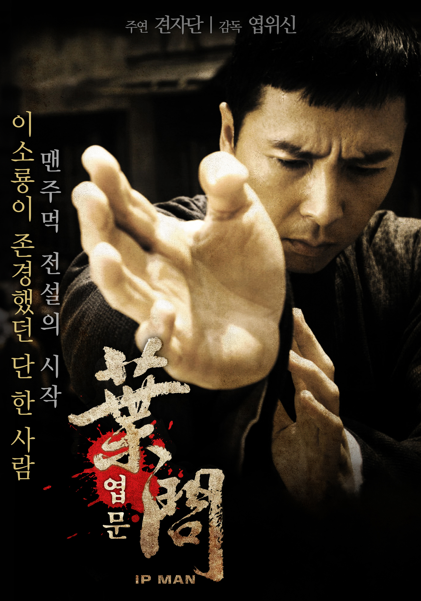

첫번째: 엽문 시리즈

중국의 유명한 무술인 이소룡의 스승 엽문을 주제로 만든 영화이다.
여러 시리즈들이 있는데 미국의 약쟁이 복싱선수와 싸우거나,
일본에 저항을 하는 등 매 시리즈마다 주제가 다르다.
그중 가장 재밌게 봤던 시리즈는 1편이었는데 그냥 단순하게 과거의
일본인들을 두들겨 패는게 속이 시원해서 가장 좋아하는 시리즈다.
두번째: 테이큰 시리즈

"I will look for you. I will find you. And i kill you"
저 유명한 대사를 남긴 영화 테이큰 시리즈다.
전직 특수부대 요원이었던 브라이언의 딸 킴이 납치당하고, 전직 특수부대 였던
브라이언이 딸을 찾아내는 과정을 나타낸 영화이다. 매 시리즈마다 딸내미가
납치를 당하고, 다양한 방법과 액션으로 딸을 다시 찾아내는데 두번째 시리즈는
첫번째 시리즈만큼 재밌다는 느낌은 들지 않았다. 아무래도 첫번째 시리즈를 매우
인상깊게 봤던 탓에 기대를 너무 했기 때문인 것 같다.
세번째: 1987

이 영화를 보고 과거의 우리나라의 경찰들에 대해 분노를 느꼈다.
"책상을 탁! 치니 억!하고 죽었습니다." 라는 터무니없는 말을하며
조사도중 사망한 대학생을 단순 쇼크사인 것처럼 거짓발표를 한다.
영화 중반에 억울하게 죽은 아들의 골분을 강에 뿌리는 아버지가 했던 말에
가슴이 너무 아팠다. 뼛가루가 강물을 타고 흘러가지 않는 장면에서 아버지가
"내새끼 와 못가노" 라며 강물에 뼛가루를 손으로 흘려보내며 "아부지는 아무 할말이 없데이.."
라고 말하는 장면에서 눈물을 안 흘릴 수가 없었다. 게다가 시위를 하다 최루탄을 맞고 사망한
이한열 열사까지 가슴아픈 역사의 내용을 다룬 영화라 잊혀지지 않는다. 여태까지 본 영화중
가장 잊혀지지 않을 영화라고 생각한다.